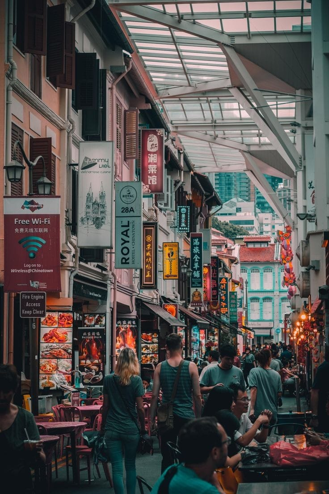

Immerse yourself in the vibrant tapestry of Singapore's Chinese heritage by exploring the bustling streets of Chinatown. Marvel at the beautifully preserved shophouses, visit ornate temples like the Buddha Tooth Relic Temple, and navigate through the lively street markets offering tantalizing street food, traditional crafts, and antiques.
Chinatown is a vibrant neighborhood in Singapore that blends Chinese heritage with modernity. It's made up of four sub-areas that were developed at different times: Telok Ayer (1820s), Kreta Ayer (1830s), Bukit Pasoh (early 1900s), and Tanjong Pagar (1920s). Chinatown is known for its hawker centers, temples, teahouses, bars, cafes, and independent art galleries.
